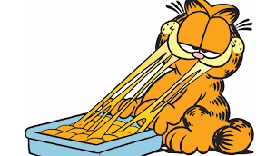

Garfield's Lasagne

Description
This is Garfield's Lasagne, the best lasagne in the world. It takes approximately 45min. to finish this dish. You
need an oven.
Ingredients
- 1 package of lasagna sheets
- 2 cups of bolognese sauce
- 1/2 cup of parmesan
- 2 balls fresh mozzarella
- 1/2 cup of cheddar
- 1 1/2 cups of potatoes
- 1 egg
- 1 quail eggs
- Parsley
Steps
- Cook the lasagna pasta according to package instructions, let cool and then spread it out over a rectangular baking dish. Spread a layer of bolognese, sprinkle with parmesan cheese and place the mozzarella cheese cut into strips. Cover with more pasta, spread a layer of herbed ricotta, sprinkle with mozzarella and grated cheddar. Repeat to form several layers of cheese and Bolognese. Finish with a layer of herbed ricotta, sprinkle with grated cheese, and bake for 30 minutes at 350°F.
- Cook potatoes in boiling water, then mash to form a puree. Add cornstarch, orange food coloring powder, and mix. Spread the orange mashed potato, place a hard-boiled egg in the center, then wrap the mashed potato around to form a round shape. Repeat with a quail egg to form a head. Press the top to form ears, then form the face and body details with the remaining mashed potatoes and egg whites. Draw in face details with black food coloring. Place Garfield on the lasagna, sprinkle with chopped parsley, and enjoy!